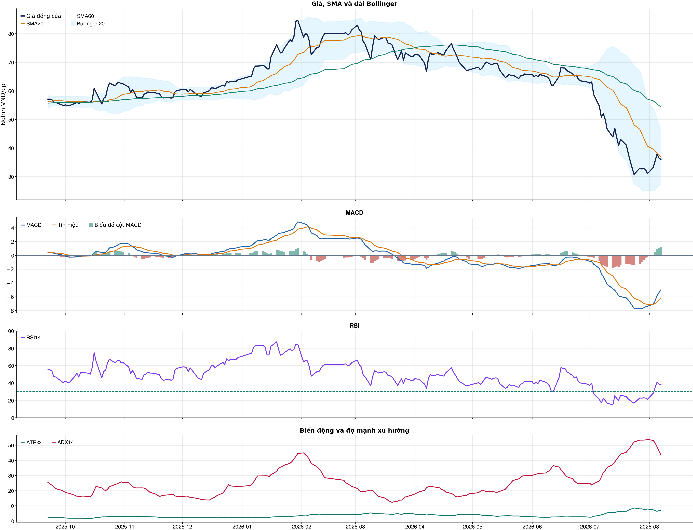
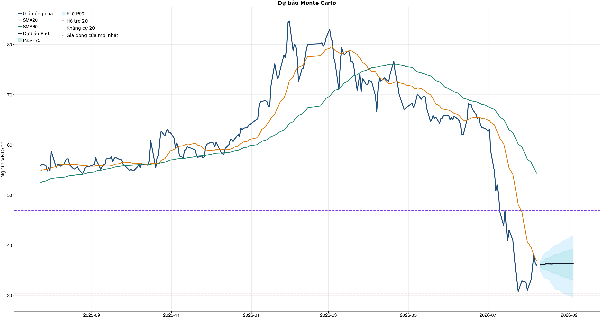
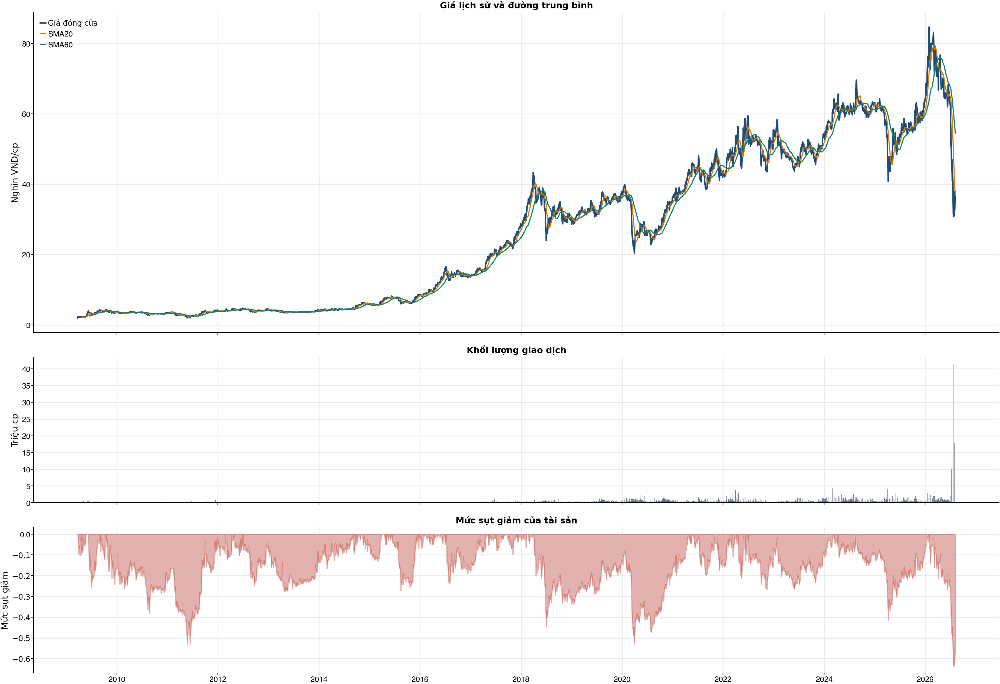

Kết quả chính
Tổng quan cơ bản
Biểu đồ kỹ thuật

Tín hiệu kỹ thuật
| Xu hướng | Cẩn thận | Giá nằm dưới SMA60. |
| MACD | Tích cực | MACD trên signal, histogram dương. |
| RSI14 | Yếu | RSI 37.9. |
| Bollinger | Ổn định | Giá nằm trong dải Bollinger. |
| ADX | Xu hướng giảm | ADX 43.5, -DI vượt +DI. |
| Thanh khoản | Thấp | 0.38 lần trung bình. |
| Stochastic | Yếu lại | %K nằm dưới %D. |
So sánh mô hình
| XGBoost | 0.492 | AUC 0.490 |
| Logistic | 0.488 | AUC 0.504 |
| Đa số | 0.500 | Mốc so sánh |
Kiểm thử chiến lược ngoài mẫu sau chi phí
| Lợi nhuận ròng | -5.5% | 657 quan sát ngoài mẫu |
| Sharpe | -0.19 | Sau chi phí |
| Mức sụt giảm tối đa | -19.7% | 37 vòng giao dịch |
| Chi phí giả định | 50.0 bps | Một vòng mua và bán |
Mức độ quan trọng của đặc trưng
| macd_hist_pct | 11.63 | Mức đóng góp |
| return_20d | 11.63 | Mức đóng góp |
| rsi_14 | 11.14 | Mức đóng góp |
| close_vs_sma60 | 10.99 | Mức đóng góp |
| excess_return_1d | 10.84 | Mức đóng góp |
| macd_pct | 10.59 | Mức đóng góp |
| beta_60d | 10.44 | Mức đóng góp |
| volatility_20d | 10.41 | Mức đóng góp |
Điều kiện phát hành tín hiệu
| AUC của mô hình | KHÔNG ĐẠT | Điều kiện phát hành tín hiệu |
| Độ chính xác cân bằng của mô hình | KHÔNG ĐẠT | Điều kiện phát hành tín hiệu |
| XGBoost vượt mô hình Logistic đối chứng | KHÔNG ĐẠT | Điều kiện phát hành tín hiệu |
| Xác suất tăng đạt ngưỡng | KHÔNG ĐẠT | Điều kiện phát hành tín hiệu |
| Bối cảnh kỹ thuật đạt ngưỡng | KHÔNG ĐẠT | Điều kiện phát hành tín hiệu |
| Tỷ lệ lợi nhuận/rủi ro đạt ngưỡng | ĐẠT | Điều kiện phát hành tín hiệu |
| Dữ liệu còn mới | ĐẠT | Điều kiện phát hành tín hiệu |
| Có khối lượng vị thế hợp lệ | ĐẠT | Điều kiện phát hành tín hiệu |
| Có kết quả kiểm thử chiến lược ngoài mẫu | ĐẠT | Điều kiện phát hành tín hiệu |
| Mẫu kiểm thử chiến lược đủ lớn | ĐẠT | Điều kiện phát hành tín hiệu |
| Kiểm thử chiến lược có lợi thế ròng | KHÔNG ĐẠT | Điều kiện phát hành tín hiệu |
Quản trị rủi ro
| Rủi ro/lệnh | 1.0% | 1,000,000 VND |
| Mức dừng lỗ | 32.23 | Rủi ro mỗi cổ phiếu 3.94 |
| Mục tiêu 1 | 46.90 | Lợi nhuận/rủi ro 2.71 |
| Mục tiêu 2 | 46.90 | Dự báo/kháng cự |
Phân tích cơ bản
| P/E | 6.35 | 2026-Q2 |
| P/B | 1.33 | 2026-Q2 |
| P/S | 0.42 | 2026-Q2 |
| ROE | 21.6% | 2026-Q2 |
| ROA | 14.9% | 2026-Q2 |
| Gross margin | 20.7% | 2026-Q2 |
| Net margin | 6.7% | 2026-Q2 |
| Debt/Equity | 0.51 | 2026-Q2 |
| Current ratio | 2.74 | 2026-Q2 |
| NPL | 0.0% | 2026-Q2 |
| Dividend yield | 0.0% | 2026-Q2 |
| Market cap | 18,422.0 tỷ | 2026-Q2 |
| Revenue Growth | 11.9% | 2026-Q2 YoY |
| Profit Growth | -164.7% | 2026-Q2 YoY |
| Dòng tiền từ HĐKD | -1,568.2 tỷ | 2026-Q2 |
| CAPEX | -21.5 tỷ | 2026-Q2 |
| Lợi nhuận sau thuế | -283.0 tỷ | 2026-Q2 |
| Lợi nhuận hoạt động | -345.8 tỷ | 2026-Q2 |
| Chi phí lãi vay | -56.9 tỷ | 2026-Q2 |
| Tiền và tương đương tiền | 608.7 tỷ | 2026-Q2 |
| Vay ngắn hạn | 3,989.1 tỷ | 2026-Q2 |
| Vay dài hạn | 0.0 tỷ | 2026-Q2 |
| Tổng tài sản | 21,017.6 tỷ | 2026-Q2 |
| Tổng nợ phải trả | 7,105.0 tỷ | 2026-Q2 |
| Vốn chủ sở hữu | 13,912.5 tỷ | 2026-Q2 |
| Khoản phải thu | 193.3 tỷ | 2026-Q2 |
| Hàng tồn kho | 15,149.4 tỷ | 2026-Q2 |
| Dòng tiền tự do (CFO - CAPEX) | -1,589.7 tỷ | 2026-Q2 |
| CFO / Lợi nhuận sau thuế | 5.54 | 2026-Q2 |
| Nợ vay ròng | 3,380.5 tỷ | 2026-Q2 |
| Nợ vay / Vốn chủ sở hữu | 0.29 | 2026-Q2 |
| Phải thu / Tổng tài sản | 0.9% | 2026-Q2 |
| Khả năng trả lãi (EBIT / lãi vay) | -6.08 | 2026-Q2 |
Tin tức doanh nghiệp
| Trạng thái | Có dữ liệu | research_only |
| Nguồn / số bài | VCI | 50 |
| Bài đủ timestamp | 50 | Chỉ các bài này mới được phép dùng point-in-time |
| Sentiment 5 ngày | 0.00 | 5.0 bài trước cutoff |
| Phương pháp | keyword_heuristic_v1 | Research only; chưa dùng làm tín hiệu mua/bán |
Dự báo ngắn hạn
| 2026-08-10 | 36.05 | P10 34.66 / P90 36.92 |
| 2026-08-11 | 36.05 | P10 34.46 / P90 37.45 |
| 2026-08-12 | 36.09 | P10 33.91 / P90 38.01 |
| 2026-08-13 | 36.11 | P10 33.35 / P90 38.26 |
| 2026-08-14 | 36.25 | P10 33.47 / P90 38.59 |
| 2026-08-17 | 36.24 | P10 33.09 / P90 38.92 |
| 2026-08-18 | 36.24 | P10 32.47 / P90 39.24 |
| 2026-08-19 | 36.22 | P10 32.21 / P90 39.48 |
Biểu đồ dự báo

Lịch sử giá và mức sụt giảm

Báo cáo dùng để học tập và lập kịch bản, không phải khuyến nghị mua/bán.
Phân tích AI có kiểm chứng
Trạng thái quyết định: NO_EDGE
Tóm tắt: ML decision hiện giữ nguyên NO_EDGE. News Reader đã trích đoạn có nguồn của 7 bài để phân loại chủ đề (ket_qua_kinh_doanh: 3, co_tuc_va_hanh_dong_doanh_nghiep: 3, vi_mo: 2, nganh: 7, rui_ro: 3), nhưng các trích đoạn này không tạo bằng chứng mới cho quyết định đầu tư.
Kỹ thuật: Artifact kỹ thuật: bias Suy yếu / cẩn thận; điểm -4. Chi tiết artifact: Xu hướng: Cẩn thận (Giá nằm dưới SMA60.); MACD: Tích cực (MACD trên signal, histogram dương.); RSI14: Yếu (RSI 37.9.); Bollinger: Ổn định (Giá nằm trong dải Bollinger.); ADX: Xu hướng giảm (ADX 43.5, -DI vượt +DI.); Thanh khoản: Thấp (0.38 lần trung bình.); Stochastic: Yếu lại (%K nằm dưới %D.)
Cơ bản: Artifact cơ bản: Vàng Phú Nhuận; kỳ 2026-Q2; P/E 6.35; P/B 1.33; ROE 21.6%; ROA 14.9%; Debt/Equity 0.51; Revenue Growth 11.9%; Profit Growth -164.7%.
Tin tức: Đã đọc trích đoạn giới hạn của 7 bài; phân nhóm rule-based: ket_qua_kinh_doanh: 3, co_tuc_va_hanh_dong_doanh_nghiep: 3, vi_mo: 2, nganh: 7, rui_ro: 3. Tác động cần kiểm chứng: Đối chiếu doanh thu/lợi nhuận trong bài với BCTC và kỳ vọng thị trường. Kiểm tra ngày GDKHQ, tỷ lệ, nguồn chi trả và nguy cơ pha loãng trước khi đánh giá tác động. Đối chiếu thời điểm công bố và kênh tác động lãi suất/tỷ giá với mô hình kinh doanh. So sánh tín hiệu ngành với thị phần, nhu cầu và đối thủ trước khi suy luận cho riêng doanh nghiệp. Xác minh công bố chính thức, phạm vi ảnh hưởng và khả năng định lượng rủi ro. Đây không phải sentiment hay dự báo tác động giá.
Live research: Live snapshot lấy lúc 2026-08-09T09:23:26.395558+00:00; News Reader đọc được 7 bài. ML có 6 lý do guard và vẫn là NO_EDGE. Không dùng tin live để train/backtest.
Rủi ro cần kiểm chứng
- ML guard: AUC 0.490 < 0.540
- ML guard: Balanced accuracy 0.492 < 0.520
- ML guard: XGBoost chưa vượt logistic baseline: AUC XGBoost=0.4904799385318866, AUC logistic=0.5037574258353479
- ML guard: Probability 47.9% < 55.0%
- ML guard: Technical score -4 < 2
- ML guard: Lợi thế OOS ròng không đạt: return=-0.05460289999999968, Sharpe=-0.19220090248872881
- News Reader: Đối chiếu doanh thu/lợi nhuận trong bài với BCTC và kỳ vọng thị trường.
- News Reader: Kiểm tra ngày GDKHQ, tỷ lệ, nguồn chi trả và nguy cơ pha loãng trước khi đánh giá tác động.
- News Reader: Đối chiếu thời điểm công bố và kênh tác động lãi suất/tỷ giá với mô hình kinh doanh.
- News Reader: So sánh tín hiệu ngành với thị phần, nhu cầu và đối thủ trước khi suy luận cho riêng doanh nghiệp.
- News Reader: Xác minh công bố chính thức, phạm vi ảnh hưởng và khả năng định lượng rủi ro.
- Chỉ lưu trích đoạn giới hạn để kiểm chứng nguồn; không lưu hay hiển thị toàn văn bài báo.
- Phân nhóm là keyword rule-based để định tuyến research, không phải sentiment hay dự báo tác động giá.
- Dữ liệu News Reader chỉ phục vụ research/report; không dùng làm feature train/backtest khi chưa có lịch sử available_at point-in-time.
- Tin live/trích đoạn cần mở URL gốc để kiểm chứng bối cảnh, số liệu và thời điểm trước khi sử dụng.
Bằng chứng
- ML decision artifact: NO_EDGE. AUC 0.490 < 0.540
- ML decision artifact: NO_EDGE. Balanced accuracy 0.492 < 0.520
- ML decision artifact: NO_EDGE. XGBoost chưa vượt logistic baseline: AUC XGBoost=0.4904799385318866, AUC logistic=0.5037574258353479
- ML decision artifact: NO_EDGE. Probability 47.9% < 55.0%
- ML decision artifact: NO_EDGE. Technical score -4 < 2
- ML decision artifact: NO_EDGE. Lợi thế OOS ròng không đạt: return=-0.05460289999999968, Sharpe=-0.19220090248872881
- News Reader [VietnamFinance]: Cổ phiếu tăng mạnh: PNJ tạo đáy, nhóm vốn hoá lớn hồi phục - VietnamFinance | nhóm: ket_qua_kinh_doanh, co_tuc_va_hanh_dong_doanh_nghiep, nganh, rui_ro (2026-08-09T08:30:00+00:00)
- News Reader [Nhadautu.vn]: PNJ tính điều chỉnh kế hoạch kinh doanh, cổ phiếu quay đầu giảm mạnh - Nhadautu.vn | nhóm: ket_qua_kinh_doanh, co_tuc_va_hanh_dong_doanh_nghiep, vi_mo, nganh, rui_ro (2026-08-06T08:46:23+00:00)
- News Reader [VnExpress]: Cổ phiếu PNJ giao dịch với khối lượng kỷ lục - VnExpress | nhóm: nganh (2026-07-24T07:00:00+00:00)
- News Reader [Tin tức 24h]: Cổ phiếu PNJ liên tục tăng trần - Tin tức 24h | nhóm: nganh (2026-08-04T10:02:00+00:00)
- News Reader [Tuổi Trẻ]: PNJ tiếp tục tăng trần, cổ phiếu Vietcap dậy sóng sau tin về giao dịch cổ phiếu của lãnh đạo - Tuổi Trẻ | nhóm: nganh (2026-07-28T07:00:00+00:00)
- News Reader [Thời báo Tài chính Việt Nam]: Khối ngoại nối dài đà mua ròng, tiếp tục "gom" cổ phiếu PNJ - Thời báo Tài chính Việt Nam | nhóm: ket_qua_kinh_doanh, co_tuc_va_hanh_dong_doanh_nghiep, vi_mo, nganh, rui_ro (2026-08-05T11:41:59+00:00)
- News Reader [baonghean.vn]: Cổ phiếu PNJ bật tăng gần 6% - baonghean.vn | nhóm: nganh (2026-08-04T05:19:01+00:00)
Báo cáo chỉ tổng hợp artifact đã lưu để nghiên cứu; không phải khuyến nghị mua/bán. Quyết định và vị thế vẫn bị khóa theo signal_decision.json.
Tin web đã lấy
| Nguồn | Tiêu đề | Thời điểm | Link |
|---|---|---|---|
| VietnamFinance | Cổ phiếu tăng mạnh: PNJ tạo đáy, nhóm vốn hoá lớn hồi phục - VietnamFinance | 2026-08-09T08:30:00+00:00 | Mở nguồn |
| CafeF | Ai vừa tung hàng trăm tỷ "bắt đáy" PNJ? - CafeF | 2026-08-03T08:45:00+00:00 | Mở nguồn |
| Nhadautu.vn | PNJ tính điều chỉnh kế hoạch kinh doanh, cổ phiếu quay đầu giảm mạnh - Nhadautu.vn | 2026-08-06T08:46:23+00:00 | Mở nguồn |
| Laodong.vn | Cổ phiếu PNJ nằm sàn sau khi báo lỗ kỷ lục - Laodong.vn | 2026-07-31T07:00:00+00:00 | Mở nguồn |
| VnExpress | Cổ phiếu PNJ giao dịch với khối lượng kỷ lục - VnExpress | 2026-07-24T07:00:00+00:00 | Mở nguồn |
| Tin tức 24h | Cổ phiếu PNJ liên tục tăng trần - Tin tức 24h | 2026-08-04T10:02:00+00:00 | Mở nguồn |
| Tuổi Trẻ | PNJ tiếp tục tăng trần, cổ phiếu Vietcap dậy sóng sau tin về giao dịch cổ phiếu của lãnh đạo - Tuổi Trẻ | 2026-07-28T07:00:00+00:00 | Mở nguồn |
| Thời báo Tài chính Việt Nam | Khối ngoại nối dài đà mua ròng, tiếp tục "gom" cổ phiếu PNJ - Thời báo Tài chính Việt Nam | 2026-08-05T11:41:59+00:00 | Mở nguồn |
| baonghean.vn | Cổ phiếu PNJ bật tăng gần 6% - baonghean.vn | 2026-08-04T05:19:01+00:00 | Mở nguồn |
| Báo VietNamNet | Dự phòng 865 tỷ đồng vì kim cương, PNJ lỗ gần 283 tỷ, cổ phiếu về đáy 6 năm - Báo VietNamNet | 2026-07-31T07:00:00+00:00 | Mở nguồn |
| Tin nhanh chứng khoán | Vàng bạc Đá quý Phú Nhuận (PNJ) muốn điều chỉnh kế hoạch kinh doanh sau biến cố - Tin nhanh chứng khoán | 2026-08-05T23:42:56+00:00 | Mở nguồn |
| Báo Dân trí | Chứng khoán giằng co, cổ phiếu PNJ lại kịch trần - Báo Dân trí | 2026-08-04T09:36:53+00:00 | Mở nguồn |
| Kenh14.vn | Cổ phiếu PNJ tím trần 3 phiên liên tiếp, một thế lực âm thầm “bắt đáy" hàng trăm tỷ đồng - Kenh14.vn | 2026-08-05T09:27:00+00:00 | Mở nguồn |
| VietnamFinance | Theo dấu lô 659.000 cổ phiếu PNJ: Đi 1 vòng qua tài khoản tự doanh hay 'chỉ là trùng hợp'? - VietnamFinance | 2026-08-05T01:30:00+00:00 | Mở nguồn |
| VnExpress | Cổ phiếu PNJ tăng trần - VnExpress | 2026-07-27T07:00:00+00:00 | Mở nguồn |
| Tuổi Trẻ | PNJ tăng trần trở lại, MWG cùng loạt cổ phiếu chứng khoán bất ngờ 'nằm sàn' cuối phiên - Tuổi Trẻ | 2026-07-27T07:00:00+00:00 | Mở nguồn |
| CafeF | Cổ phiếu PNJ "dò đáy" 6 năm - CafeF | 2026-07-31T07:00:00+00:00 | Mở nguồn |
| Tuổi Trẻ | PNJ giảm sàn 4 phiên liên tiếp, hơn 41 triệu cổ phiếu sang tay kỷ lục - Tuổi Trẻ | 2026-07-24T07:00:00+00:00 | Mở nguồn |
| VietnamFinance | Ai đứng sau lô thỏa thuận hơn 2 triệu cổ phiếu PNJ? - VietnamFinance | 2026-07-30T07:00:00+00:00 | Mở nguồn |
| Tuổi Trẻ | Thêm một quỹ ngoại không còn là cổ đông lớn tại PNJ dù nắm giữ thêm 5,7 triệu cổ phiếu, vì sao? - Tuổi Trẻ | 2026-07-30T07:00:00+00:00 | Mở nguồn |
News Reader: bài đã đọc và trích đoạn
| Nguồn | Tiêu đề | Nhóm | Thời điểm | Trích đoạn đã đọc | Link |
|---|---|---|---|---|---|
| VietnamFinance | Cổ phiếu tăng mạnh: PNJ tạo đáy, nhóm vốn hoá lớn hồi phục - VietnamFinance | ket_qua_kinh_doanh, co_tuc_va_hanh_dong_doanh_nghiep, nganh, rui_ro | 2026-08-09T08:30:00+00:00 | Xem trích đoạn(VNF) - Thanh khoản cải thiện giúp nhóm vốn hóa lớn chấm dứt đà điều chỉnh, trong khi PNJ và một số cổ phiếu tăng mạnh nhờ dòng tiền cùng thông tin hỗ trợ. Khép lại tuần giao dịch đầu tiên của tháng 8, thị trường chứng khoán Việt Nam ghi nhận đà hồi phục tích cực. VN-Index tăng 32,28 điểm, tương đương 1,86%, lên 1.768,06 điểm, đánh dấu tuần thứ hai liên tiếp chỉ số tăng điểm, sau mức tăng 49,67 điểm, tương đương 2,95%, trong tuần trước đó. Thanh khoản thị trường vẫn duy trì ở mức tương đối thấp khi khối lượng giao dịch bình quân trên HoSE đạt khoảng 693 triệu cổ phiếu/phiên, giảm hơn 4% so với tuần trước và thấp hơn khoảng 9% so với mức bình quân 20 tuần. Trong khi đó, giá trị giao dịch bình quân đạt 18.295 tỷ đồng/phiên, tăng nhẹ 4% so với tuần trước. Trong bối cảnh thanh khoản chưa thực sự bùng nổ nhưng dòng tiền có dấu hiệu cải thiện, nhóm cổ phiếu vốn hóa lớn đã chấm dứt đà điều chỉnh và bắt đầu hồi phục, qua đó đóng góp đáng kể vào mức tăng chung của VN-Index. Diễn biến này cho thấy tâm lý nhà đầu tư đang dần ổn định trở lại, dù dòng tiền vẫn phân hóa rõ nét giữa các nhóm cổ phiếu. Trên sàn HoSE, top 10 cổ phiếu tăng mạnh nhất tuần lần lượt gồm HII (+21,30%), GEL (+18,73%), CNG (+16,40%), PNJ (+16,13%), KLB (+15,93%), GIL (+15,02%), DGC (+13,04%), TAL (+12,58%), PGI (+11,67%) và BVH (+11,31%). Đáng chú ý, PNJ lọt nhóm cổ phiếu tăng mạnh sau khi ghi nhận nhịp hồi phục đáng kể từ vùng đáy quanh 30.000 đồng/cổ phiếu, được hình thành sau sự cố P-Labs. Trong tuần, PNJ có hai phiên tăng trần liên tiếp, với khối lượng khớp lệnh lên tới hàng chục triệu đơn vị, cho thấy dòng tiền đang quay trở lại với cổ phiếu này. Đà tăng của PNJ diễn ra trong bối cảnh HĐQT CTCP Vàng bạc Đá quý Phú Nhuận vừa ban hành nghị quyết phê duyệt việc thay đổi hình thức tổ chức ĐHĐCĐ bất thường năm 2026, từ lấy ý kiến cổ đông bằng văn bản sang triệu tập họp trực tiếp. Theo nghị quyết, PNJ sẽ chốt danh sách cổ đông có quyền tham dự vào ngày 25/8 và dự kiến tổ chức đại hội trong tháng 10. Một trong những nội dung đáng chú ý là việc điều chỉnh kế hoạch kinh doanh năm 2026 trên cơ sở đánh giá tình hình thực tế, cùng một số vấn đề khác thuộc thẩm quyền của ĐHĐCĐ. Bên cạnh PNJ, TAL cũng gây chú ý khi tăng 12,58% trong tuần và ghi nhận nhiều phiên tăng trần. Diễn biến tích cực của TAL diễn ra sau thông tin CTCP Đầu tư Kinh doanh Hạ tầng Plaschem, công ty con của CTCP Đầu tư Bất động sản | Mở nguồn |
| Nhadautu.vn | PNJ tính điều chỉnh kế hoạch kinh doanh, cổ phiếu quay đầu giảm mạnh - Nhadautu.vn | ket_qua_kinh_doanh, co_tuc_va_hanh_dong_doanh_nghiep, vi_mo, nganh, rui_ro | 2026-08-06T08:46:23+00:00 | Xem trích đoạnSau ba phiên tăng trần liên tiếp, cổ phiếu PNJ quay đầu giảm mạnh trong phiên 6/8. Diễn biến này diễn ra ngay sau khi doanh nghiệp quyết định dừng lấy ý kiến cổ đông mua lại cổ phiếu. Phiên giao dịch ngày 6/8, cổ phiếu PNJ ghi nhận biến động mạnh. Mở cửa, mã này tăng hơn 5% lên vùng 39.700 đồng/cp nhưng áp lực bán gia tăng khiến cổ phiếu đảo chiều, kết phiên giảm 3,83% xuống còn 36.450 đồng/cp. Thanh khoản duy trì ở mức cao với gần 8,5 triệu cổ phiếu được sang tay. Trước đó, PNJ có ba phiên tăng trần liên tiếp, phục hồi từ vùng 30.250 đồng/cp lên 37.900 đồng/cp. Dữ liệu giao dịch cho thấy vùng giá quanh 30.000 đồng/cp liên tục xuất hiện lực cầu lớn. Riêng phiên 24/7 ghi nhận thanh khoản kỷ lục 41,3 triệu cổ phiếu, trong khi phiên 31/7 cũng đạt 17,73 triệu đơn vị. Diễn biến của PNJ diễn ra trong bối cảnh thị trường chung điều chỉnh. Kết thúc phiên 6/8, VN-Index giảm 11,68 điểm xuống 1.764,78 điểm, đánh dấu phiên điều chỉnh đáng kể sau chuỗi hồi phục hơn 100 điểm kể từ cuối tháng 7. Đáng chú ý, ngày 5/8, HĐQT PNJ đã thông qua hai quyết định quan trọng gồm dừng việc lấy ý kiến cổ đông bằng văn bản và triệu tập ĐHĐCĐ bất thường. Trước đó, vào đầu tháng 7, sau khi thông tin cựu Giám đốc P-Lab – công ty con của PNJ – bị bắt do liên quan đến đường dây buôn lậu kim cương xuyên biên giới, cổ phiếu PNJ đã phản ứng tiêu cực. Trong bối cảnh đó, HĐQT công ty từng quyết định lấy ý kiến cổ đông bằng văn bản về kế hoạch mua lại cổ phiếu nhằm bảo vệ giá trị doanh nghiệp và lợi ích cổ đông. Sau khoảng một tháng, HĐQT quyết định dừng việc lấy ý kiến cổ đông bằng văn bản và chuyển sang triệu tập ĐHĐCĐ bất thường. Ngày đăng ký cuối cùng để chốt danh sách cổ đông tham dự là 17/8. Nội dung cuộc họp bao gồm việc điều chỉnh kế hoạch kinh doanh năm 2026 trên cơ sở đánh giá tình hình thực tế, cùng các vấn đề khác thuộc thẩm quyền của ĐHĐCĐ. Không chỉ cổ phiếu chịu ảnh hưởng sau sự việc liên quan đến P-Lab, hoạt động kinh doanh của PNJ cũng gặp nhiều khó khăn. Tình trạng khách hàng bán lại kim cương tăng đột biến khiến doanh nghiệp phải chi tổng cộng 7.062 tỷ đồng để mua lại sản phẩm trong 27 ngày đầu tháng 7, trong khi doanh số bán hàng chỉ đạt 2.981 tỷ đồng. Điều này tạo áp lực lớn lên dòng tiền, buộc doanh nghiệp phải tất toán trước hạn các khoản tiền gửi có kỳ hạn. Bên cạnh đó, PNJ ghi nhận khoản lỗ sau thuế 283 tỷ đồng trong quý II. Nguyên nhân chủ yếu đến từ việc trích lập dự | Mở nguồn |
| VnExpress | Cổ phiếu PNJ giao dịch với khối lượng kỷ lục - VnExpress | nganh | 2026-07-24T07:00:00+00:00 | Xem trích đoạnLệnh mua chủ động xuất hiện sau 14h giúp PNJ ghi nhận thanh khoản kỷ lục hơn 41,3 triệu cổ phiếu, dù thị giá vẫn giảm kịch sàn. Cổ phiếu PNJ của Công ty cổ phần Vàng bạc đá quý Phú Nhuận giảm kịch sàn từ khi mở cửa và gần như giữ giá 30.750 đồng đến lúc kết phiên. Mã này đang có giá thấp nhất kể từ cuối tháng 10/2020, tức gần 6 năm qua. Buổi sáng, lượng cổ phiếu được sang tay không quá sôi động, nhưng sau 14h, bảng điện liên tục nhảy khớp lệnh. Tổng giá trị giao dịch của PNJ đạt gần 1.272 tỷ đồng, tương đương hơn 41,3 triệu cổ phiếu. Đây là mức thanh khoản kỷ lục của cổ phiếu này kể từ khi được niêm yết trên HoSE vào cuối tháng 3/2009. Nhà đầu tư đang theo dõi bảng giá tại một công ty chứng khoán ở TP HCM. Ảnh: Quỳnh Trần Xét về cơ cấu, theo tính toán của VnDirect, lệnh mua chủ động giữ thế áp đảo khi chiếm tới 80% lượng khớp lệnh. Lệnh mua chủ động (buy up) là loại lệnh do nhà đầu tư chủ động thực hiện và khớp ngay lập tức với mức giá đang chờ bán hoặc đặt sẵn cao nhất trên thị trường. Thông thường, lệnh mua chủ động áp đảo cho thấy cổ phiếu đang có bên quyết tâm gom hàng. Lệnh mua chủ động từ 14h đã giúp thị giá PNJ có lúc "thoát" sàn. Tuy nhiên, do lượng dư bán ở giá 30.750 vẫn còn nhiều, khiến mã này giảm kịch biên độ trở lại chỉ trong vài phút. Kết phiên, PNJ còn dư bán 427.000 đơn vị, mức thấp so với nhiều phiên trước. Cổ phiếu PNJ đang trong xu hướng điều chỉnh mạnh sau sự việc nguyên giám đốc công ty giám định P-Lab liên quan đường dây buôn lậu kim cương. Tính từ thời điểm đó đến nay, cổ phiếu này đã giảm hơn một nửa thị giá. Vốn hóa của doanh nghiệp đầu ngành kim hoàn cũng bị thổi bay hơn 16.500 tỷ đồng, khiến họ mất vị thế công ty tỷ USD. PNJ là một trong 218 cổ phiếu giảm giá trong phiên hôm nay. Với 61% mã trên sàn HoSE điều chỉnh, chứng khoán gần như bị nhuộm đỏ suốt cả ngày. VN-Index đóng cửa ở trên 1.686 điểm, sụt hơn 13 điểm so với hôm qua. Trừ dầu khí, các cổ phiếu trên thị trường đều ghi nhận chỉ số ngành đi lùi. Diễn biến tiêu cực nhất xảy ra ở nhóm bán lẻ, chứng khoán và công nghệ. Thị trường rung lắc khiến tâm lý thận trọng và xu hướng "giữ hàng" được đề cao. Hệ quả là tổng giá trị giao dịch trên sàn HoSE giảm hơn 30% so với hôm qua, xuống còn khoảng 13.900 tỷ đồng. Hôm nay, khối ngoại gia tăng xu hướng xả hàng. Giá trị bán ròng ghi nhận 1.338 tỷ đồng, cao gấp 2,7 lần so với phiên trước. Trong đó, PNJ chịu áp lực nhiều nhất khi bị bán | Mở nguồn |
| Tin tức 24h | Cổ phiếu PNJ liên tục tăng trần - Tin tức 24h | nganh | 2026-08-04T10:02:00+00:00 | Xem trích đoạnSau nhịp điều chỉnh mạnh xuống đáy 6 năm, PNJ quay đầu tăng trần hai phiên liên tiếp nhờ lực cầu mạnh của nhà đầu tư trong lẫn ngoài nước. Cổ phiếu của Công ty cổ phần Vàng bạc đá quý Phú Nhuận (PNJ) trên đà hồi phục mạnh sau gần một tháng chịu ảnh hưởng của sự việc nguyên giám đốc công ty con (P-Lab) liên quan đến đường dây buôn lậu 28.000 viên kim cương. Cổ phiếu này chốt phiên tại 35.450 đồng, nối dài mạch tăng trần hai phiên liên tiếp. Thị giá đã hồi phục khoảng 15% so với vùng đáy 6 năm mới thiết lập cuối tháng trước. PNJ khởi sắc nhờ lực mua của nhà đầu tư trong lẫn ngoài nước. Khối lượng sang tay trong phiên hôm nay đạt hơn 10 triệu đơn vị, tương ứng 370 tỷ đồng, trong khi vẫn còn trên 1,2 triệu cổ phiếu chờ mua tại giá trần. Nhà đầu tư nước ngoài đang "bắt đáy" quyết liệt khi tổng giá trị mua ròng 6 phiên gần nhất xấp xỉ 500 tỷ đồng. Trạng thái hưng phấn ở PNJ đồng thuận với diễn biến thị trường chung. Chỉ số đại diện cho sàn TP HCM giao dịch trên tham chiếu trong phần lớn thời gian và đóng cửa tại 1.777 điểm, tăng 14 điểm so với hôm qua. VN-Index đã hồi phục 7% so với mức thấp nhất trong nhịp điều chỉnh cuối tháng trước, đồng thời tiệm cận ngưỡng tâm lý quan trọng 1.800 điểm. Cổ phiếu tăng chiếm ưu thế trên sàn TP HCM với 165 mã, còn bên giảm chưa đến 140 mã. Thị trường gần như không có nhóm ngành nào tăng hay giảm đồng thuận. Ở nhóm ngân hàng, KLB dẫn đầu biên độ tăng với 4,8%, sau đó đến STB, HDB, MBB và LPB. Ngược lại, nhóm giảm điểm có nhiều đại diện vốn hóa lớn như VCB , TCB, SHB và BID dù biên độ điều chỉnh đều không quá 1,5%. Cổ phiếu bất động sản có nhiều mã tăng như LDG, PDR, HDG, NVL, DIG. Các cổ phiếu liên quan đến Vingroup như VIC, VHM, VRE, VPL cũng đóng cửa trong sắc xanh với biên độ dao động 0,2-4,8%. Trong khi đó, cổ phiếu của một số chủ đầu tư như An Gia, Hoàng Quân... lội ngược dòng với mức giảm 0,5-2,5%. Thanh khoản thị trường đạt gần 18.200 tỷ đồng, giảm hơn 1.000 tỷ đồng so với hôm qua. VIC tiếp tục đứng đầu về giá trị khớp lệnh với 1.100 tỷ đồng, bỏ xa các mã xếp sau như VHM và VIX. Nhà đầu tư nước ngoài phát tín hiệu tích cực khi nối dài mạch mua ròng hai phiên liên tiếp. Nhóm này giải ngân gần 2.800 tỷ đồng, trong khi bán ra khoảng 1.900 tỷ đồng. Ngoài PNJ, dòng tiền của khối ngoại hướng đến MBB và HPG. Dự báo về xu hướng sắp tới, nhóm phân tích Công ty Chứng khoán Tiên Phong cho rằng nhịp hồi phục ngắn hạn vẫn được duy trì. | Mở nguồn |
| Tuổi Trẻ | PNJ tiếp tục tăng trần, cổ phiếu Vietcap dậy sóng sau tin về giao dịch cổ phiếu của lãnh đạo - Tuổi Trẻ | nganh | 2026-07-28T07:00:00+00:00 | Xem trích đoạnDu lịch Cơ hội du lịch Đi chơi Mách bạn Quê hương Bạn đọc Phản hồi Đường dây nóng Tiêu điểm Chia sẻ VN-Index duy trì sắc xanh trong phiên sáng 28-7 nhờ lực đỡ từ nhóm ngân hàng, thép và chứng khoán. PNJ tiếp đà tăng trần trong phiên sáng 28-7 - Ảnh: QUANG ĐỊNH Điểm nhấn của phiên sáng 28-7 là cổ phiếu PNJ của Công ty CP Vàng bạc đá quý Phú Nhuận tiếp tục tăng kịch trần 6,99%, lên 35.200 đồng/cổ phiếu, đánh dấu phiên tăng trần thứ hai liên tiếp sau chuỗi lao dốc mạnh trước đó. Đáng chú ý, cổ phiếu này tiếp tục trong tình trạng trắng bên bán. Chỉ trong buổi sáng, khối lượng khớp lệnh đã đạt gần 7,3 triệu cổ phiếu. Dù hồi phục mạnh trong hai phiên gần đây, thị giá PNJ ở mức 35.200 đồng/cổ phiếu vẫn thấp hơn khoảng 59% so với đỉnh thiết lập hồi tháng 2. Vốn hóa thị trường của doanh nghiệp hiện quanh mốc 18.000 tỉ đồng. PNJ tăng trần trở lại, MWG cùng loạt cổ phiếu chứng khoán bất ngờ 'nằm sàn' cuối phiên Mỹ áp thuế 12,5% với hàng Việt: VN-Index sẽ chịu tác động đến đâu? Đà tăng của cổ phiếu diễn ra trong bối cảnh PNJ liên tục có động thái trấn an cổ đông, nhà đầu tư và khách hàng sau những biến động vừa qua. Mới đây, Tổng giám đốc Phan Quốc Công thay mặt hội đồng quản trị và ban điều hành gửi thư đến cổ đông, nhà đầu tư, đồng thời gửi lời xin lỗi vì những tác động tiêu cực đến giá cổ phiếu cũng như niềm tin của thị trường trong thời gian qua. Không chỉ PNJ, cổ phiếu VCI của Công ty Chứng khoán Vietcap cũng tăng hết biên độ lên 19.700 đồng/cổ phiếu. Đà tăng của VCI diễn ra trong bối cảnh sáng cùng ngày doanh nghiệp công bố thông tin về giao dịch cổ phiếu của lãnh đạo. Bảng điện phiên giao dịch sáng 28-7 ngập sắc xanh - Dữ liệu: SSI Theo thông báo từ Vietcap, thành viên hội đồng quản trị Tô Hải đăng ký mua vào 31,05 triệu cổ phiếu VCI nhằm đáp ứng nhu cầu đầu tư cá nhân. Giao dịch dự kiến được thực hiện bằng phương thức khớp lệnh hoặc thỏa thuận trong thời gian từ ngày 4-8 đến 2-9. Trước giao dịch, ông Hải sở hữu hơn 174,3 triệu cổ phiếu, tương đương 15,1% vốn điều lệ Vietcap. Nếu hoàn tất thương vụ, lượng cổ phiếu nắm giữ sẽ tăng lên hơn 205,3 triệu đơn vị, tương ứng 17,83% vốn. Ngoài VCI tăng trần, SSI tăng 3,41%, VIX tăng 4,68%, SHS tăng 4,2%, VND tăng 3,91%, MBS tăng 2,3%. Kết thúc phiên sáng 28-7, VN-Index tăng 4,39 điểm, tương đương 0,26%, lên 1.673,40 điểm. VN30-Index tăng 8,56 điểm (0,47%) lên 1.815,06 điểm. Trong khi đó, HNX-Index gần như đi ngang khi | Mở nguồn |
| Thời báo Tài chính Việt Nam | Khối ngoại nối dài đà mua ròng, tiếp tục "gom" cổ phiếu PNJ - Thời báo Tài chính Việt Nam | ket_qua_kinh_doanh, co_tuc_va_hanh_dong_doanh_nghiep, vi_mo, nganh, rui_ro | 2026-08-05T11:41:59+00:00 | Xem trích đoạnSau nhịp hồi phục mạnh từ vùng đáy quanh 1.650 điểm lên sát ngưỡng kháng cự 1.800 điểm, thị trường chứng khoán hôm nay (ngày 5/8) có phiên điều chỉnh do áp lực chốt lời gia tăng tại nhiều nhóm cổ phiếu vốn hóa lớn. Dù vậy, dòng vốn ngoại tiếp tục là điểm sáng, nối dài chuỗi mua ròng sang phiên thứ ba liên tiếp. Đây cũng là yếu tố góp phần nâng đỡ tâm lý nhà đầu tư. Trên 3 sàn, các nhà đầu tư nước ngoài mua ròng 476 tỷ đồng. Trong đó, khối ngoại tiếp tục tập trung giải ngân vào các cổ phiếu dẫn dắt. VHM dẫn đầu với giá trị mua ròng 383,6 tỷ đồng, tiếp đến là VIC (147,9 tỷ đồng), MBB (123,4 tỷ đồng) và PNJ (109,9 tỷ đồng). Dòng tiền ngoại cũng duy trì trạng thái mua ròng tại CTG, FPT, HPG, HVN, FRT và VND. Đáng chú ý, PNJ đã được khối ngoại mua ròng liên tiếp 7 phiên, đánh dấu sự đảo chiều mạnh mẽ sau chuỗi bán ròng kéo dài trước đó. Cùng với lực cầu ngoại, cổ phiếu này đã có 3 phiên tăng trần, đưa thị giá hồi phục mạnh từ vùng đáy quanh 31.000 đồng/cổ phiếu, tương đương mức tăng hơn 20% chỉ trong thời gian ngắn. Diễn biến này cho thấy, dòng tiền bắt đáy vẫn đang duy trì tại mã cổ phiếu từng chịu áp lực bán rất lớn trong tháng 7. Ở chiều ngược lại, áp lực bán ròng của khối ngoại phân bổ khá đều, tập trung tại VPB (98,9 tỷ đồng), VNM (72,4 tỷ đồng) và TCX (66,7 tỷ đồng). Các mã VIB, MSN, NVL, VSC, MSB, HDB và NLG cũng ghi nhận bán ròng nhưng giá trị đều dưới 50 tỷ đồng. Dù VN-Index chịu áp lực điều chỉnh sau chuỗi tăng mạnh, đà mua ròng của khối ngoại duy trì 3 phiên liên tiếp, đặc biệt tiếp tục giải ngân vào nhóm cổ phiếu vốn hóa lớn và những mã đang có câu chuyện riêng như PNJ, vẫn là tín hiệu tích cực đối với dòng vốn ngoại trong ngắn hạn./. Sau thanh tra loạt "ông lớn" kinh doanh vàng, Bảo Tín Mạnh Hải và Mi Hồng lên tiếng về việc khắc phục tồn tại Thanh tra Chính phủ chỉ ra nhiều vi phạm trong hoạt động kinh doanh vàng Chứng khoán tuần mới (10 - 16/8): Dòng tiền đứng trước "bài kiểm tra" 1.800 điểm Infographics: Điểm sáng kinh tế Việt Nam 7 tháng năm 2026 qua các con số Mỏ Việt Bắc báo lỗ quý II, lợi nhuận 6 tháng giảm 81% AI và hiện đại hóa ngân hàng lõi: Hơn 300 lãnh đạo tài chính Châu Á - Thái Bình Dương sẽ quy tụ tại TRF’26 APAC Hà Nội Ngày 9/8: Giá cà phê tiếp tục giảm, hồ tiêu cao nhất ở mức 141.000 đồng/kg Ngày 9/8: Giá bạc phiên cuối tuần đồng loạt đi lên Công nghệ “len” vào mọi "mắt xích", mở diện mạo mới cho ngành bảo hiểm Mạng lưới giám sát | Mở nguồn |
| baonghean.vn | Cổ phiếu PNJ bật tăng gần 6% - baonghean.vn | nganh | 2026-08-04T05:19:01+00:00 | Xem trích đoạnTrong bối cảnh thanh khoản suy giảm và thị trường phân hóa mạnh, cổ phiếu PNJ tiếp tục trở thành điểm sáng khi duy trì mức tăng khoảng 6%. Mở cửa phiên giao dịch sáng 4/8, đà tăng của thị trường có dấu hiệu chững lại khi VN-Index tiến sát vùng kháng cự quanh mốc 1.770 điểm, tương ứng đường MA200. Sau hơn 1 giờ giao dịch, chỉ số liên tục rung lắc trong biên độ hẹp trước khi lực cầu cải thiện trở lại, giúp VN-Index tăng hơn 10 điểm. Tâm lý thận trọng của nhà đầu tư khi quan sát phản ứng của chỉ số tại vùng cản quan trọng khiến thanh khoản suy giảm so với đầu phiên, đồng thời tạo nên trạng thái phân hóa rõ nét trên bảng điện tử. Nhiều nhóm ngành cũng dần hạ nhiệt, trong khi chỉ một số ít cổ phiếu vốn hóa nhỏ như HII, TSC và FIT duy trì đà tăng kịch trần. Điểm sáng thuộc về PNJ khi cổ phiếu này tiếp tục nới rộng đà tăng lên khoảng 6%. Thanh khoản đạt hơn 3,7 triệu đơn vị, cho thấy dòng tiền vẫn đang tập trung mạnh vào mã này. Tại nhóm bất động sản, VIC (+2,58%), VHM (+2,97%), VRE (+2,38%), PDR (+2,54%) và VPI (+0,46%). Sự phân hóa diễn ra tại nhóm ngân hàng, MBB (+0,83%), HDB (+1,15%), STB (+1,54%), SHB (-1,58%), TCB (-1,17%) và VPB (-0,2%). Tương tự nhóm hàng và dịch vụ công nghiệp, GEX (-0,21%), VSC (+1,06%), GMD (-0,91%), PVT (-1,08%), VTP (-0,31%) và HAH (-0,22%). Sắc đỏ chìm trong sắc đỏ, VIX (-0,37%), SSI (-1,02%), VND (-0,3%), SHS (-0,64%) và TCX (-1,96%). Kết thúc phiên giao dịch sáng nay, VN-Index tăng 6,2 điểm lên 1.769,04 điểm (+0,35%) so với phiên trước, tương tự, chỉ số HNX-Index tăng 286,37 điểm (+2,54%), tương đương 7,09 điểm, chỉ số UPCoM-Index tăng 127,24 điểm (+0,45%) tương đương 0,57 điểm. Thanh khoản thị trường đạt 7.718,4 tỷ đồng, với 298 nghìn cổ phiếu được giao dịch. Toàn ngành ghi nhận 132 mã tăng, 152 mã giảm và 64 mã rơi xuống giá tham chiếu. Theo chuyên gia Công ty Chứng khoán AIS, chỉ số VN-Index bứt phá ấn tượng với mức tăng 1,56%, vượt mốc 1.750 điểm. Lực nâng đỡ chủ yếu đến từ nhóm ngân hàng, chứng khoán và công nghệ. Ngược lại, không có nhóm ngành nào chịu áp lực điều chỉnh đáng kể. Khối ngoại quay trở lại mua ròng mạnh mẽ, tập trung chủ yếu vào các mã đầu ngành như FPT, HPG, VCB, cho thấy tín hiệu dần tích cực hơn. Thị trường dự kiến sẽ thử thách vùng kháng cự quan trọng 1.770 - 1.810 điểm (tương đương MA200 ngày và MA20 tuần). Phản ứng của chỉ số VN-Index tại khu vực này sẽ là yếu tố then chốt, quyết định tính bền vững của nhịp | Mở nguồn |
Chi tiết báo cáo tài chính
Kết quả kinh doanh — 4 kỳ gần nhất
Hiển thị 35 dòng đầu; mở CSV đầy đủ.
| Khoản mục | 2026-Q2 | 2026-Q1 | 2025-Q4 | 2025-Q3 |
|---|---|---|---|---|
| Doanh thu bán hàng và cung cấp dịch vụ | 8,584.3 tỷ | 17,366.7 tỷ | 9,750.7 tỷ | 8,235.6 tỷ |
| Các khoản giảm trừ doanh thu | -100.5 tỷ | -121.4 tỷ | -127.7 tỷ | -100.1 tỷ |
| Doanh thu thuần | 8,483.7 tỷ | 17,245.2 tỷ | 9,623.0 tỷ | 8,135.5 tỷ |
| Giá vốn hàng bán | -6,920.5 tỷ | -13,804.3 tỷ | -7,223.7 tỷ | -6,528.3 tỷ |
| Lợi nhuận gộp | 1,563.3 tỷ | 3,440.9 tỷ | 2,399.3 tỷ | 1,607.2 tỷ |
| Doanh thu hoạt động tài chính | -28.2 tỷ | 52.4 tỷ | 46.1 tỷ | 28.3 tỷ |
| Chi phí tài chính | -61.5 tỷ | -55.1 tỷ | -39.2 tỷ | -30.5 tỷ |
| Chi phí lãi vay | -56.9 tỷ | -50.6 tỷ | -33.5 tỷ | -24.1 tỷ |
| Chi phí bán hàng | -756.7 tỷ | -1,352.0 tỷ | -704.1 tỷ | -757.5 tỷ |
| Chi phí quản lý doanh nghiệp | -1,062.7 tỷ | -222.1 tỷ | -186.7 tỷ | -240.4 tỷ |
| Lãi/(lỗ) từ hoạt động kinh doanh | -345.8 tỷ | 1,864.1 tỷ | 1,515.4 tỷ | 607.0 tỷ |
| Thu nhập khác | 19.9 tỷ | 3.6 tỷ | 10.2 tỷ | 22.0 tỷ |
| Chi phí khác | -1.1 tỷ | -2.9 tỷ | -5.1 tỷ | -3.3 tỷ |
| Thu nhập khác, ròng | 18.9 tỷ | 0.7 tỷ | 5.1 tỷ | 18.7 tỷ |
| Lãi/(lỗ) từ công ty liên doanh | 0.0 tỷ | 0.0 tỷ | 0.0 tỷ | 0.0 tỷ |
| Lãi/(lỗ) trước thuế | -326.9 tỷ | 1,864.8 tỷ | 1,520.5 tỷ | 625.8 tỷ |
| Thuế thu nhập doanh nghiệp - hiện thời | -22.1 tỷ | -397.5 tỷ | -429.1 tỷ | -130.4 tỷ |
| Thuế thu nhập doanh nghiệp - hoãn lại | 66.0 tỷ | 0.1 tỷ | 126.7 tỷ | 0.4 tỷ |
| Chi phí thuế thu nhập doanh nghiệp | 43.9 tỷ | -397.4 tỷ | -302.4 tỷ | -130.0 tỷ |
| Lãi/(lỗ) thuần sau thuế | -283.0 tỷ | 1,467.4 tỷ | 1,218.1 tỷ | 495.7 tỷ |
| Lợi ích của cổ đông thiểu số | -0.1 tỷ | 0.0 tỷ | 0.0 tỷ | 0.0 tỷ |
| Lợi nhuận của Cổ đông của Công ty mẹ | -282.9 tỷ | 1,467.4 tỷ | 1,218.1 tỷ | 495.7 tỷ |
| Lãi cơ bản trên cổ phiếu (VND) | -0.0 tỷ | 0.0 tỷ | 0.0 tỷ | 0.0 tỷ |
| Lãi trên cổ phiếu pha loãng (VND) | 0.0 tỷ | 0.0 tỷ | 0.0 tỷ | 0.0 tỷ |
| Lãi/(lỗ) từ công ty liên doanh (từ năm 2015) | 0.0 tỷ | 0.0 tỷ | 0.0 tỷ | 0.0 tỷ |
Bảng cân đối kế toán — 4 kỳ gần nhất
Hiển thị 35 dòng đầu; mở CSV đầy đủ.
| Khoản mục | 2026-Q2 | 2026-Q1 | 2025-Q4 | 2025-Q3 |
|---|---|---|---|---|
| TÀI SẢN NGẮN HẠN | 19,430.9 tỷ | 18,163.4 tỷ | 18,614.0 tỷ | 15,664.1 tỷ |
| Tiền và tương đương tiền | 608.7 tỷ | 923.5 tỷ | 522.0 tỷ | 584.7 tỷ |
| Tiền | 599.1 tỷ | 494.1 tỷ | 438.4 tỷ | 542.7 tỷ |
| Các khoản tương đương tiền | 9.5 tỷ | 429.4 tỷ | 83.6 tỷ | 42.0 tỷ |
| Đầu tư ngắn hạn | 3,393.3 tỷ | 3,586.4 tỷ | 2,007.5 tỷ | 2,246.5 tỷ |
| Đầu tư ngắn hạn | 99.1 tỷ | 99.1 tỷ | 97.9 tỷ | 99.3 tỷ |
| Dự phòng giảm giá | 0.0 tỷ | 0.0 tỷ | 0.0 tỷ | 0.0 tỷ |
| Các khoản phải thu | 193.3 tỷ | 147.8 tỷ | 154.0 tỷ | 259.9 tỷ |
| Phải thu khách hàng | 46.8 tỷ | 70.3 tỷ | 48.8 tỷ | 106.4 tỷ |
| Trả trước người bán | 113.1 tỷ | 31.5 tỷ | 38.1 tỷ | 58.9 tỷ |
| Phải thu nội bộ | 0.0 tỷ | 0.0 tỷ | 0.0 tỷ | 0.0 tỷ |
| Phải thu hợp đồng xây dựng đang thực hiện | 0.0 tỷ | 0.0 tỷ | 0.0 tỷ | 0.0 tỷ |
| Phải thu khác | 65.3 tỷ | 77.7 tỷ | 90.7 tỷ | 82.9 tỷ |
| Dự phòng nợ khó đòi | -31.9 tỷ | -31.9 tỷ | -31.9 tỷ | -28.5 tỷ |
| Hàng tồn kho, ròng | 15,149.4 tỷ | 13,419.0 tỷ | 15,835.3 tỷ | 12,448.8 tỷ |
| Hàng tồn kho | 15,559.7 tỷ | 13,461.1 tỷ | 15,881.3 tỷ | 12,495.0 tỷ |
| Dự phòng giảm giá hàng tồn kho | -410.4 tỷ | -42.1 tỷ | -46.0 tỷ | -46.2 tỷ |
| Tài sản lưu động khác | 86.3 tỷ | 86.7 tỷ | 95.2 tỷ | 124.3 tỷ |
| Chi phí trả trước ngắn hạn | 85.4 tỷ | 86.1 tỷ | 94.9 tỷ | 121.2 tỷ |
| Thuế GTGT được khấu trừ | 0.6 tỷ | 0.4 tỷ | 0.2 tỷ | 0.3 tỷ |
| Phải thu thuế khác | 0.0 tỷ | 0.0 tỷ | 0.1 tỷ | 2.7 tỷ |
| Tài sản lưu động khác | 0.2 tỷ | 0.2 tỷ | 0.0 tỷ | 0.0 tỷ |
| TÀI SẢN DÀI HẠN | 1,586.7 tỷ | 1,529.3 tỷ | 1,549.6 tỷ | 1,386.6 tỷ |
| Phải thu dài hạn | 124.0 tỷ | 120.5 tỷ | 121.2 tỷ | 118.1 tỷ |
| Phải thu khách hàng dài hạn | 0.0 tỷ | 0.0 tỷ | 0.0 tỷ | 0.0 tỷ |
| Phải thu nội bộ dài hạn | 0.0 tỷ | 0.0 tỷ | 0.0 tỷ | 0.0 tỷ |
| Phải thu dài hạn khác | 124.0 tỷ | 120.5 tỷ | 121.2 tỷ | 118.1 tỷ |
| Dự phòng phải thu dài hạn | 0.0 tỷ | 0.0 tỷ | 0.0 tỷ | 0.0 tỷ |
| Tài sản cố định | 919.9 tỷ | 914.7 tỷ | 855.8 tỷ | 864.8 tỷ |
| GTCL TSCĐ hữu hình | 252.9 tỷ | 246.2 tỷ | 236.2 tỷ | 242.3 tỷ |
| Nguyên giá TSCĐ hữu hình | 890.2 tỷ | 870.5 tỷ | 845.0 tỷ | 839.1 tỷ |
| Khấu hao lũy kế TSCĐ hữu hình | -637.3 tỷ | -624.3 tỷ | -608.8 tỷ | -596.8 tỷ |
| GTCL tài sản thuê tài chính | 0.0 tỷ | 0.0 tỷ | 0.0 tỷ | 0.0 tỷ |
| Nguyên giá tài sản thuê tài chính | 0.0 tỷ | 0.0 tỷ | 0.0 tỷ | 0.0 tỷ |
| Khấu hao lũy kế tài sản thuê tài chính | 0.0 tỷ | 0.0 tỷ | 0.0 tỷ | 0.0 tỷ |
Lưu chuyển tiền tệ — 4 kỳ gần nhất
Hiển thị 35 dòng đầu; mở CSV đầy đủ.
| Khoản mục | 2026-Q2 | 2026-Q1 | 2025-Q4 | 2025-Q3 |
|---|---|---|---|---|
| Lợi nhuận/(lỗ) trước thuế | -326.9 tỷ | 1,864.8 tỷ | 1,520.5 tỷ | 625.8 tỷ |
| Khấu hao TSCĐ và BĐSĐT | 19.0 tỷ | 18.5 tỷ | 20.5 tỷ | 21.0 tỷ |
| Chi phí dự phòng | 1,231.6 tỷ | -3.9 tỷ | 5.7 tỷ | -5.1 tỷ |
| Lãi/lỗ chênh lệch tỷ giá hối đoái do đánh giá lại các khoản mục tiền tệ có gốc ngoại tệ | 0.0 tỷ | -0.0 tỷ | -2.0 tỷ | 1.5 tỷ |
| Lãi/(lỗ) từ thanh lý tài sản cố định | 0.0 tỷ | 0.0 tỷ | 0.0 tỷ | 0.0 tỷ |
| (Lãi)/lỗ từ hoạt động đầu tư | 28.7 tỷ | -42.8 tỷ | -42.5 tỷ | -25.1 tỷ |
| Chi phí lãi vay | 56.9 tỷ | 50.6 tỷ | 33.5 tỷ | 24.1 tỷ |
| Thu lãi và cổ tức | 0.0 tỷ | 0.0 tỷ | 0.0 tỷ | 0.0 tỷ |
| Lợi nhuận/(lỗ) từ hoạt động kinh doanh trước những thay đổi vốn lưu động | 1,009.3 tỷ | 1,887.1 tỷ | 1,535.7 tỷ | 642.1 tỷ |
| (Tăng)/giảm các khoản phải thu | -48.5 tỷ | -49.8 tỷ | 96.4 tỷ | -64.2 tỷ |
| (Tăng)/giảm hàng tồn kho | -2,098.6 tỷ | 2,420.2 tỷ | -3,386.3 tỷ | 1,264.9 tỷ |
| Tăng/(giảm) các khoản phải trả | -237.0 tỷ | -59.7 tỷ | 130.6 tỷ | 37.4 tỷ |
| (Tăng)/giảm chi phí trả trước | 17.0 tỷ | 25.0 tỷ | 48.0 tỷ | 41.9 tỷ |
| Tiền lãi vay đã trả | -56.5 tỷ | -51.5 tỷ | -32.4 tỷ | -23.4 tỷ |
| Thuế thu nhập doanh nghiệp đã nộp | -150.4 tỷ | -611.8 tỷ | -87.5 tỷ | -71.1 tỷ |
| Tiền thu khác từ hoạt động kinh doanh | 0.0 tỷ | 0.0 tỷ | 0.0 tỷ | 0.0 tỷ |
| Tiền chi khác cho hoạt động kinh doanh | -3.4 tỷ | -0.5 tỷ | -0.9 tỷ | -5.0 tỷ |
| Lưu chuyển tiền tệ ròng từ các hoạt động sản xuất kinh doanh | -1,568.2 tỷ | 3,557.8 tỷ | -1,695.0 tỷ | 1,822.2 tỷ |
| Tiền chi để mua sắm, xây dựng TSCĐ và các tài sản dài hạn khác | -21.5 tỷ | -14.8 tỷ | -66.4 tỷ | -7.4 tỷ |
| Tiền thu từ thanh lý, nhượng bán TSCĐ và các tài sản dài hạn khác | 0.0 tỷ | 0.0 tỷ | 0.0 tỷ | 0.0 tỷ |
| Tiền chi cho vay, mua các công cụ nợ của đơn vị khác | -306.1 tỷ | -2,994.0 tỷ | -430.4 tỷ | -2,016.8 tỷ |
| Tiền thu hồi cho vay, bán lại các công cụ nợ của đơn vị khác | 452.5 tỷ | 1,470.0 tỷ | 700.0 tỷ | 1,099.8 tỷ |
| Tiền chi đầu tư góp vốn vào đơn vị khác | 0.0 tỷ | 0.0 tỷ | 0.0 tỷ | 0.0 tỷ |
| Tiền thu hồi đầu tư góp vốn vào đơn vị khác | 0.0 tỷ | 0.0 tỷ | 0.0 tỷ | 0.0 tỷ |
| Tiền thu lãi cho vay, cổ tức và lợi nhuận được chia | 16.2 tỷ | 50.8 tỷ | 10.4 tỷ | 38.7 tỷ |
| Lưu chuyển tiền thuần từ hoạt động đầu tư | 141.0 tỷ | -1,488.0 tỷ | 213.6 tỷ | -885.7 tỷ |
| Tiền thu từ phát hành cổ phiếu, nhận vốn góp của chủ sở hữu | 17.5 tỷ | 0.0 tỷ | -0.1 tỷ | 64.9 tỷ |
| Tiền chi trả vốn góp cho các chủ sở hữu, mua lại cổ phiếu của doanh nghiệp đã phát hành | 0.0 tỷ | 0.0 tỷ | 0.0 tỷ | 0.0 tỷ |
| Tiền thu được các khoản đi vay | 5,309.4 tỷ | 2,509.9 tỷ | 3,047.5 tỷ | 1,951.7 tỷ |
| Tiền trả nợ gốc vay | -4,213.9 tỷ | -3,839.6 tỷ | -1,156.7 tỷ | -2,715.4 tỷ |
| Tiền trả nợ gốc thuê tài chính | 0.0 tỷ | 0.0 tỷ | 0.0 tỷ | 0.0 tỷ |
| Cổ tức, lợi nhuận đã trả cho chủ sở hữu | -0.9 tỷ | -339.1 tỷ | -471.6 tỷ | 0.0 tỷ |
| Tiền lãi đã nhận | 0.0 tỷ | 0.0 tỷ | 0.0 tỷ | 0.0 tỷ |
| Lưu chuyển tiền thuần từ hoạt động tài chính | 1,112.1 tỷ | -1,668.9 tỷ | 1,419.1 tỷ | -698.8 tỷ |
| Lưu chuyển tiền thuần trong kỳ | -315.0 tỷ | 400.9 tỷ | -62.3 tỷ | 237.6 tỷ |